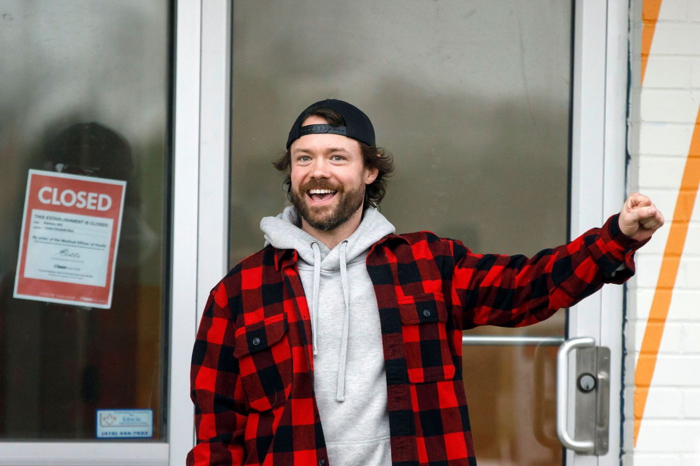
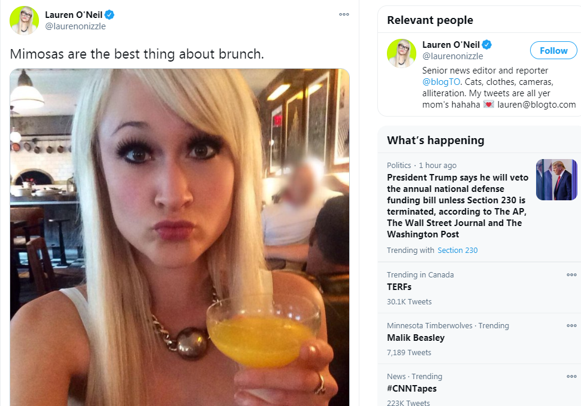
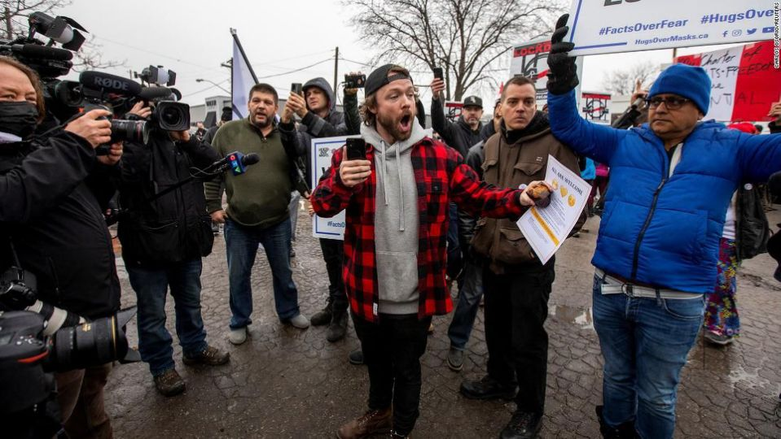
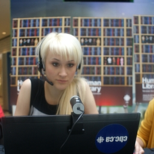
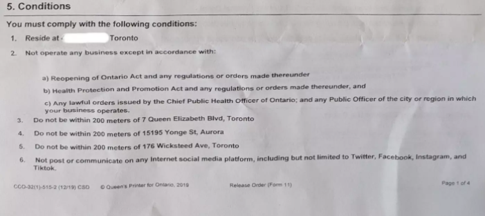

Adam Skelly's Intentional Arrest
December 14th, 2020
Remember the Adam Skelly of Adamson's BBQ story? Well, I wrote a few things. First, Adam Skelly defied the Lockdown. Then, Ontario Police changed the locks on his business, locking him out. Then, Adam Skelly was arrested, to much rejoicing from shitty awful people. Now, Adam Skelly has spoken out.
BlogTO:
TDC_ARTICLE_START
It's been two weeks since Adamson Barbecue owner Adam Skelly was arrested and taken away in handcuffs from the Etobicoke location of his popular local restaurant chain — and two weeks since he's posted anything at all to Instagram.
TDC_ARTICLE_STOP
Adam Skelly, Chad
Oh, and I totally forgot to write up the unbelievable bullshit they tried to make him go through, with a mandatory COVID test to get back to work. It's more complicated than that, but I'll write that up after this.
TDC_ARTICLE_START
For someone who was initially so conspicuous about his intentions to defy provincial lockdown orders by opening his restaurant for indoor dining, this seems a bit odd.
TDC_ARTICLE_STOP
Thank you, Lauren O'Neil, author of this piece. Here, I wrote about her in a previous article, but let me just bring up one picture.

Yes, her bio legitimately reads "Cats, clothes, cameras, alliteration." This is the quality of human behind this piece, in case you were about to actually get angry.
TDC_ARTICLE_START
But there's a reason for Skelly's social media silence, as explained by the 33-year-old restaurateur himself in a newsletter email blast Thursday evening.
Addressed to "Adamson Barbecue fans," the email begins with some caveats ("my intention is not to diminish the effects that COVID may have had on you or your loved ones") and a call-out for customers to place pre-orders for BBQ "during this particularly challenging time."
"I'm writing you today to share my side of the story from the last few weeks," writes Skelly, noting that his actions were intended to "shine some light on the unjust laws, disproportionate restrictions on small business, and excessive force used against anyone who challenges the the authoritarian measures put in place by the provincial government."
TDC_ARTICLE_STOP

Adam, honey, you know I love you, but it pisses me off when you say "authoritarian," like that's bad in principle. I want to get real authoritarian with the Propagandists who lied 167 of our soldiers to their deaths in Afghanistan. I mean, putting them up on stage, and making them scream at the tops of their jew-lungs "THERE ARE WEAPONS OF MASS DESTRUCTION IN IRAQ," while the goy-crowd laughs and jeers, and then I beat them to death with a baseball bat.
But you want to sell BBQ chicken or whatever. Yeah, sure. You do you Adam. I'm just getting a faint whiff of Cuckservatism when, thus far, this story has been a breath of fresh air.
TDC_ARTICLE_START
Skelly goes on to explain that he had actually opened the restaurant on Tuesday, November 24, with the intentions of being charged under the Reopening Ontario Act and then challenging the government in court.
"I was well aware of the position I'd be putting myself in by taking this stand. Receiving hundreds of scorning emails, angry social media messages, threats against my family, harassment by the police, and having my name dragged through the mud by the media is not something I look forward to," he wrote.
"Our lawyers agree that the government actions have impacted small businesses disproportionately, and violate our charter rights. I am hopeful that we win this fight, and the sacrifice will be for the benefit of other small businesses across the province and country."
TDC_ARTICLE_STOP
Yeah, I have respect for men who intentionally put a target on their backs and say "come get some." I might have to make an award for Adam Skelly. Maybe the Germar Rudolph Courage Against Tyranny Award.
TDC_ARTICLE_START
Skelly then stated his case with some powerful statistics and real-talk about the reality of running a small business during this unprecedented time.
"Despite having a strong take-out business, my restaurants will not survive extended lockdowns through the Spring (like thousands of others across the country who have already closed for good)," he wrote, nothing that sales are down over 60 per cent even with a successful pivot to delivery.
"Tens of thousands of small businesses in Canada have already closed permanently since March, and the CFIB estimates 200,000 more may fail by Spring. Canada now has the highest unemployment in the G7, and Canadians have raked up 400B in credit card debt (8X the highest annual spike in history)," Skelly continued.
"Overdose deaths, suicides and domestic violence are on the rise. These consequences of the lockdowns have been accepted by the general public in the name of 'safety' and 'science.'"
TDC_ARTICLE_STOP
Yes, and don't let the WMD Liars pretend that this isn't the absolute most common response to this idiot Covidtastrophism Bullshit.
TDC_ARTICLE_START
One infographic, a sympathetic video portrait, and a brief retelling of his three-day-long reopening stint later, Skelly states the City of Toronto "unlawfully sent over 200 police" to his restaurant on Thursday, November 25, after Toronto Medical Officer of Health Dr. Eileen de Villa (who he pans as "an unelected doctor") had issued a closure order.
"In my opinion, this was an excessive use of force- and the people in attendance agreed. It certainly created tensions between the authorities and my customers," he wrote, failing to acknowledge the aggressive actions of anti-masker mobs who had flocked to the site.
TDC_ARTICLE_STOP
Alright, that does it Lauren. I'm going to have to repeat what I wrote about this cunt in my previous article.
SHAMELESSLY REPEATED CONTENT BELOW
---------------------------------
Get a load of the judgemental language used by whomever wrote this piece. Actually, I'm a little too pissed off, let me look this up. Okay, turns out it's someone named Lauren O'Neil, and oh my god is it ever exactly what you are expecting it to be.
Lauren O'Neil
So let's look a little deeper. What's going on with Lauren O'Neil? Well, according to her Muckrack Bio:
TDC_ARTICLE_START
Lauren O’Neil is best known as the host of CBC News Live Online, Canada's first and only national webcam-based current affairs call-in show.
As a member of the CBC's Community and Social Media team, Lauren has her finger glued to the pulse of the web and thrives on knowing what's buzzing at any given moment.
Her innate ability to find and disseminate interesting the conversation at large has earned Lauren a respectable following both online and off.
TDC_ARTICLE_STOP
Imagine bragging about having a call-in show where your production values are so far in the toilet that you're literally using a webcam. And her twitter page routinely gets about 5-10 likes per tweet. Quite the respectable following she's got there. Also, just the general language used, yes this is everything wrong with the world.
---------------------------------
Anyway, back to this current article.
TDC_ARTICLE_START
"I made many promises (including to myself) not to back down- so I entered the building through the back unit and did what I had to do to open the restaurant. This got the police and bylaw to issue the charges under the 'Reopening Ontario Act' that I was after," continued Skelly.
"I also found out that the police were willing to throw people on the ground, push through crowds of people in an attempt to enter a building without a warrant, and arrest me like a criminal for exercising my right to earn a living."
Skelly reveals that after his arrest on Friday, November 26, he was brought to a police station and "detained for 30 hours" while a Crown Attorney for his bail hearing was being advised at the provincial level.
The conditions of his bail were set as follows:
Skelly must comply with the re-opening Ontario Act and all orders made by any public officer moving forward
Skelly must stay 200m away from all three of his restaurants
Skelly must not "post or communicate on any internet social media platform"
The polarizing restaurateur appears confident that this emailed newsletter does not count as social media, though a judge may eventually disagree.
TDC_ARTICLE_STOP
Adam Skelly's bail conditions
Listen to this cunt subtly, or maybe not so subtly, brag about snitching a brave man out to the judge for violating bullshit laws. Shitlibs really are the worst people.
Anyway, the article continues on. Skelly has raised $330,00.00 thus far on GoFundMe. And no, that doesn't mean he's a grifter, his business is going under. I will leave you with his parting quote.
TDC_ARTICLE_START
"I knew taking this stand will polarize my customers. This was not a business move. It this causes the accelerated failure of my business, I accept the consequence," said Kelly in his letter.
"I am hopeful that my customers will see my true intentions, continue to support the business and help us retain the few job opportunities we have left at the restaurants."
"You may still believe that I am putting public health at risk by opening my doors, despite overwhelming evidence showing otherwise," he continues. "You may have unwavering trust in the authorities, despite their initial predictions being off by a factor of 10, repeated contradictions and blatant misrepresentation of data."
"That's OK, you are entitled to your beliefs. I will point you again to the unsubscribe button below... I promise I will continue to fight for our freedoms, for small businesses, and for a brighter future for our children. And make the best barbecue in the country while I'm at it."
TDC_ARTICLE_STOP
 We must secure the existence of our BBQ's, and a future for BBQ eating children.
We must secure the existence of our BBQ's, and a future for BBQ eating children.

We must secure the existence of our BBQ's, and a future for BBQ eating children.